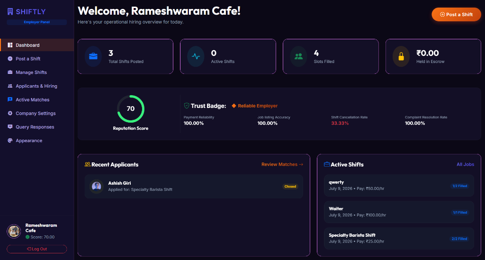
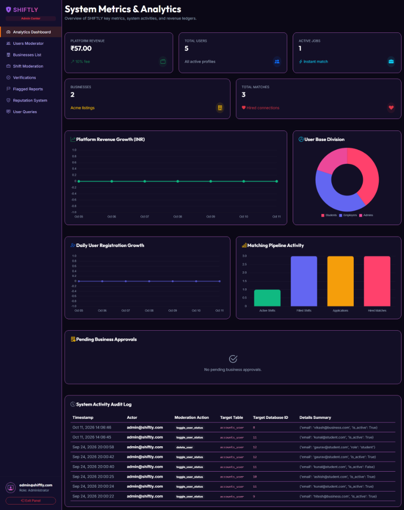

SHIFTLY
Location-Based, Swipe-to-Hire Part-Time Job Marketplace

Problem & Solution
The Problem
College students frequently struggle to discover flexible, hyper-local employment opportunities that conform to irregular academic schedules and commute constraints. Concurrently, local businesses face high friction sourcing dependable temporary talent, managing shift allocations, and filtering unverified applicants through traditional, cumbersome hiring pipelines.
The Solution
SHIFTLY is a location-aware hiring platform designed to connect college students with local businesses offering flexible part-time shifts and freelance opportunities. Its swipe-based job discovery experience helps students explore relevant opportunities based on their skills, availability, preferences, and location. Businesses can publish job openings, manage hiring workflows, and discover suitable candidates, while an admin-controlled verification system helps establish trust between students and employers. The platform is designed around configurable hiring-radius filtering, role-based access control, reputation scoring, and experience-based skill badges to support a more accessible and reliable part-time job marketplace.
Core System Features
Location-Based Job Matching
Filters eligible shifts by calculating proximity between student coordinates and business locations against custom employer hiring radiuses, allowing remote roles to bypass geographic boundaries.
Swipe-to-Hire Discovery
Provides a fast, mobile-friendly discovery deck where candidates can review shift schedules, hourly wages, and duties, swiping to express interest or dismiss opportunities.
Role-Based Access Control
Strict server-side access segregation isolating Student candidate workflows, Employer/Business management dashboards, and Administrator moderation portals.
Business Verification Workflow
Credential verification lifecycle placing newly registered enterprises in pending state until platform admins evaluate business legitimacy and grant publishing rights.
Reputation & Trust Scoring
Dual reputation model tracking payment reliability and job accuracy for businesses alongside attendance, verified skill badges, and shift completion rates for student applicants.
Admin Center & System Audit Log
Centralized operational ledger and management dashboard offering live analytics, user activation toggles, business approvals, and immutable system audit logging.

System Architecture
Technology Stack
Frontend Presentation
Backend & Application Logic
Database & Persistence
Matching & Verification
Engineering Decisions & Trade-Offs
- Role-Based Separation of Portals: Distinct URL routing, view dispatchers, and permission decorators ensure employers, students, and administrators operate in strictly bounded context spaces with zero cross-tenant authorization leakage.
- Admin-Controlled Business Verification Gate: New employer accounts remain in an inactive/pending review state until verified by an authorized administrator, preventing fraudulent job postings and protecting students.
- Server-Validated Location Filtering: Job eligibility criteria and radius parameters are calculated and enforced server-side against job configurations, allowing remote jobs to bypass distance limits safely while maintaining accurate local discovery.
- Transparent Activity Audit Logging: Critical moderation interventions (such as user status toggles or account removals) are recorded with timestamps, actor IDs, target records, and change summaries in an immutable audit ledger.
Platform Highlights
Employer Operational Hub
Comprehensive dashboard featuring active shift slot tracking, applicant review pipelines, trust badge scoring, and operational shift management.
Administrative Moderation
High-level visibility into platform revenue metrics, user base distribution, active job counters, pending business approvals, and live user toggles.